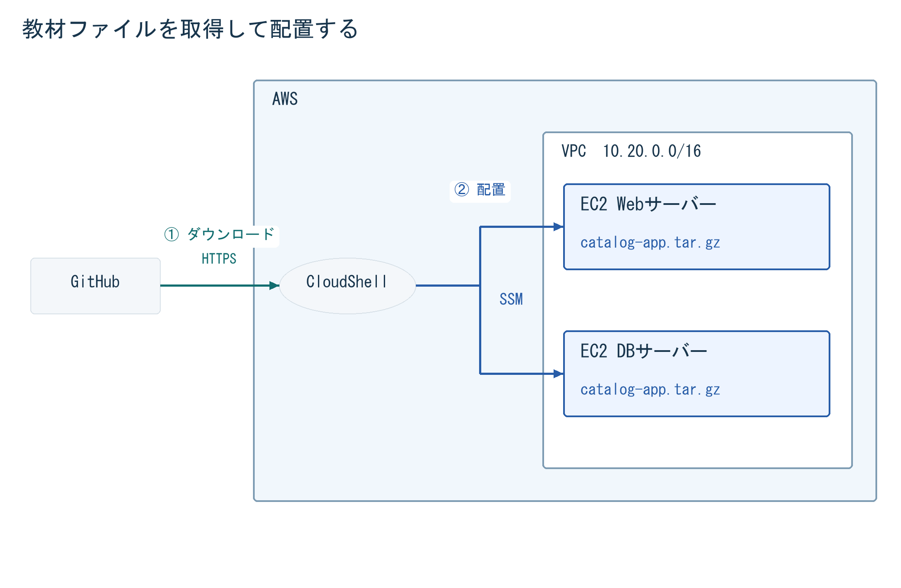
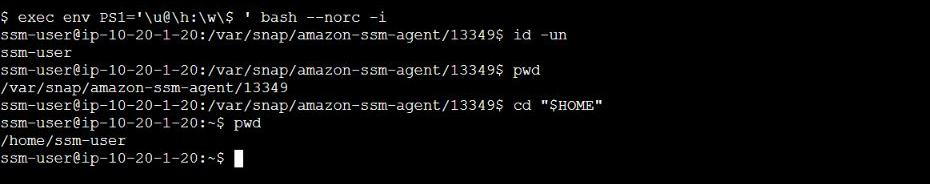
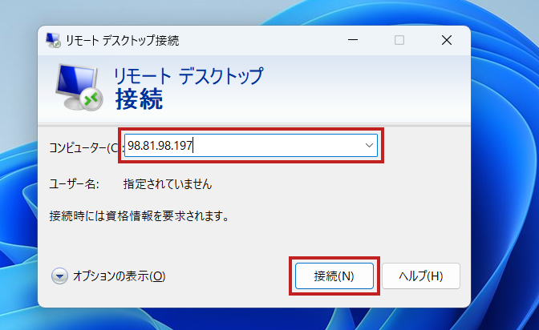
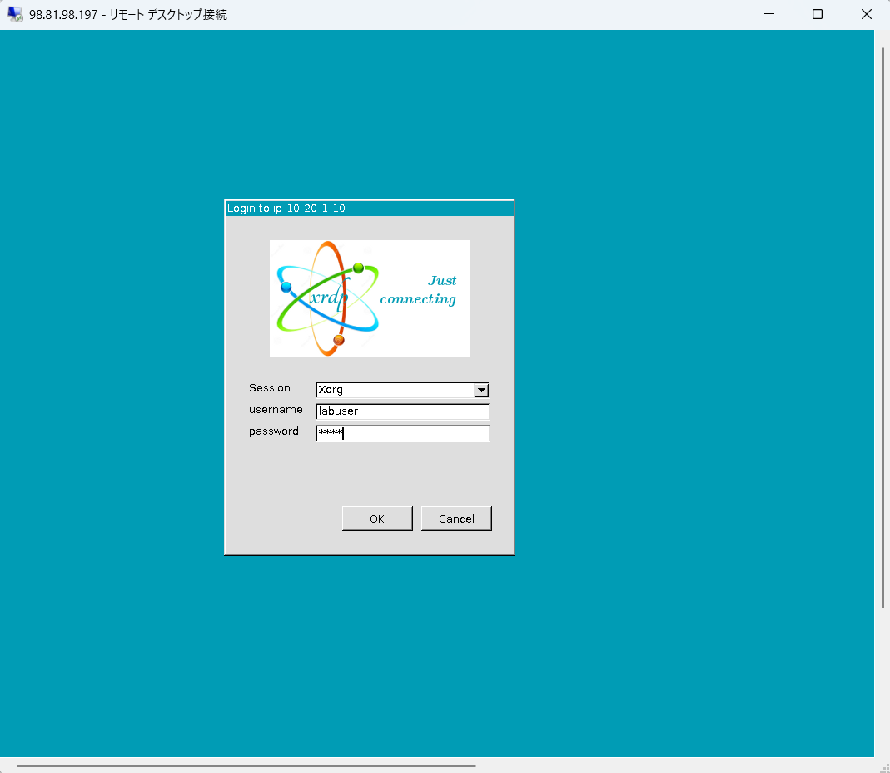
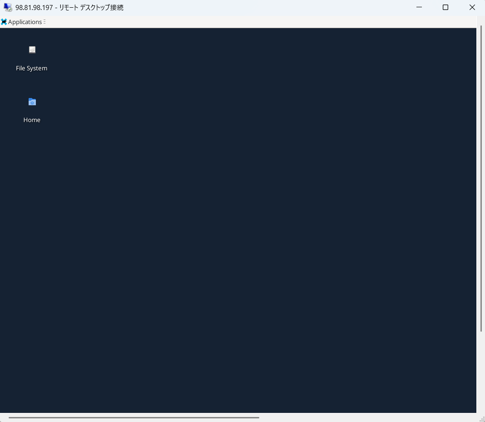

P0 サーバーの確認と接続
対応する自力課題はM0。
学ぶこと
EC2の一覧から正しいサーバーを選び、Session Managerで接続して、課題の結果を自分で確認できる。
課題
構築済みの自分の環境で、5台のインスタンスIDとロールを確認し、接続先と操作ユーザーを確かめる。
操作するサーバーとサーバー構築用ファイルの配置先

緑の矢印はP0.2の端末接続。青の矢印は初期構築時のサーバー構築用ファイルの配置を示す。配布サーバーはUbuntuなどのパッケージの配信を担当する。
このPractice0で作業すること
自分のAWSアカウント、各サーバーのロール、コマンドを実行する環境を確認する。
初期構築で配置されるサーバー構築用ファイル
共通登録コードで初期構築を完了すると、備品管理アプリとDB設定用のSQLが入った catalog-app.tar.gz は、WebサーバーとDBサーバーの /var/lib/jdu-web/lesson-resources-r1 に配置済みです。WebサーバーからインターネットへのHTTPS接続はセキュリティのために制限されているので、構築スクリプトが下の経路でサーバー構築用ファイルを届けます。

共通登録コードで環境を構築すると、CloudShellはGitHubからサーバー構築用ファイルを取得し、SSMを使ってWebサーバーとDBサーバーに配置する。
解答例（操作手順）
P0.1 5台のinstance IDを確認する
実行環境:
学生本人のAWSコンソール
目的と操作:
AWSマネジメントコンソール上部のSearch欄にEC2と入力し、EC2の管理画面を開く。EC2 → Instancesを開き、Name列で自分の演習環境の5台のサーバーを確認する。同じ行のInstance ID列からi-を含めてIDを確認する。

EC2のInstances一覧。P0は名前の末尾が -web の行、M0は -db・-dns・-repo・-bastion の行を順に選ぶ。
P0.2 Session ManagerでWebサーバーに接続する
実行環境:
WebサーバーのSSM端末：ssm-user
目的と操作:
P0.1で確認したWebサーバーの Instance ID をクリックする。詳細画面で Connect の右にある矢印を押し、Connect with SSM Session Manager を選ぶ。新しいタブのターミナルで、下のコマンドを上から1行ずつ実行する。初期構築時に置かれた /etc/jdu-web/bootstrap.json を cat で表示し、"role": "web" を探す。Webサーバーだと確認できたら、ホームディレクトリで nano を使って確認用ファイルを作る。

EC2の詳細画面。Connectの右の矢印からConnect with SSM Session Managerを選ぶ。Webサーバーの画面を例に示す。
入力するコマンド（番号はこの手順内の順番）
# 1. この端末で操作しているOSユーザー名を表示する。
id -un
# 2. 自分のホームディレクトリへ移動する。
cd ~
# 3. 現在の作業ディレクトリを表示する。
pwd
# 4. 設置済みのファイルを表示し、role が web であることを確認する。
cat /etc/jdu-web/bootstrap.json
# 5. web とだけ入力する。Ctrl+O、Enterで保存し、Ctrl+Xで終了する。
nano p0-connection.txt
# 6. p0-connection.txt の内容を変更せずに読む。
cat p0-connection.txt
期待する結果と読み方:
id -un は ssm-user、pwd は /home/ssm-user を表示する。JSONファイルには "role": "web" が含まれ、最後の cat では web だけが1行表示される。
プロンプトにユーザー名、ホスト名、現在のディレクトリが表示される。~ はホームディレクトリを表し、pwd は現在地を絶対パスで表示する。セットアップが表示を自動設定できず、$ だけが表示された場合は、次の1行を実行して現在地を常時表示する。作業が終わったら exit で接続を閉じる。
exec env PS1='\u@\h:\w\$ ' bash --norc -i

Session Managerの端末。表示を変えると、移動後のディレクトリがプロンプトに反映される。
P0.3 RDPで踏み台のデスクトップを開く
実行環境:
学生のWindows PC（共有アカウント）
目的と操作:
Windowsの「リモート デスクトップ接続」で、自分の踏み台サーバーのデスクトップを開く。
1. 踏み台サーバーを選ぶ
EC2 → Instancesで、自分の演習環境のうち名前の末尾が -bastion の行を探し、同じ行の Instance ID をクリックする。

2. 公開IPv4アドレスをコピーする
インスタンスの詳細画面で Public IPv4 address の横にあるコピーアイコンを押す。次に入力するのは、自分の画面に表示された現在の公開IPv4アドレス。スクリーンショットの値は例。


Windowsキー＋Rで「ファイル名を指定して実行」を開く。「名前」欄に mstsc /prompt を入力し、OK を押す。
入力するコマンド（番号はこの手順内の順番）
# 1. WindowsのRDP接続画面を開き、資格情報の入力を求める。
mstsc /prompt
3. 公開IPv4アドレスを入力して接続する
「リモート デスクトップ接続」の コンピューター 欄に、手順2でコピーした公開IPv4アドレスを貼り付け、接続 を押す。

4. 証明書の確認画面を読む
この画面が出た場合は、表示された接続先を手順2の公開IPv4アドレスと照合する。接続先が今回の踏み台であり、演習用の証明書だと教師に確認できたら はい を押す。確認できない場合は いいえ を押して教師に相談する。

5. 踏み台サーバーにログインする
xrdpのログイン画面で Session が Xorg になっていることを確かめる。username に labuser、password に学生用セットアップで自分が設定したRDPパスワードを入力し、OK を押す。

6. デスクトップが開いたことを確認する
リモート デスクトップ接続のウィンドウ内に、左上の Applications メニューや Home アイコンが表示されれば、踏み台サーバーに接続できている。

コマンド・設定値の意味:
RDPは踏み台の画面と入力を運ぶ。踏み台内Firefoxからの通信の送信元はWindowsではなく踏み台になる。日本語/英語などのキー配列はpasswordの記号入力にも影響するため、表示言語と配列を区別する。
期待する結果と読み方:
踏み台サーバーのUbuntuのデスクトップ（Xfce）が表示される。左上の「Applications」からFirefoxなどを開ける。
うまくいかないとき:
Login failedならuser名と日本語/英語等のkeyboard配列を確認する。passwordを会話へ送らない。到達しない場合は現在のIPと許可された接続元CIDRを教師と確認し、3389を全公開しない。終了時はRDP内の自分の作業を保存し、接続を閉じる。
確認・提出
教師が案内する採点ページのURLを自分のPCのブラウザで開き、学校のGoogleアカウントでログインする。初回だけ「自分のAWS環境を登録」を選び、画面の手順で連携する。
表のP0の行で この課題を確認する を押す。同じページで今回の結果を確認し、P0の行に 1 / 1 が保存されたことを確認する。